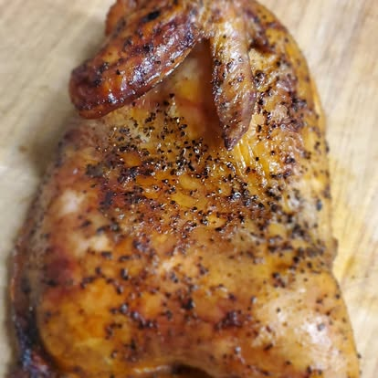
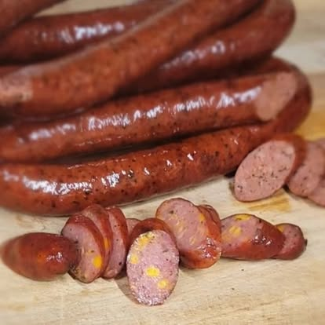
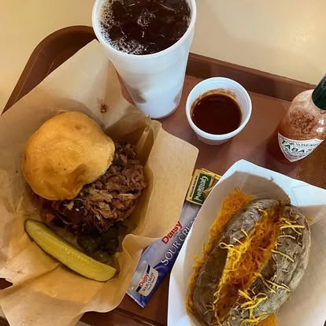
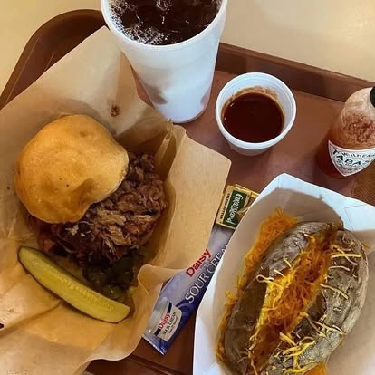
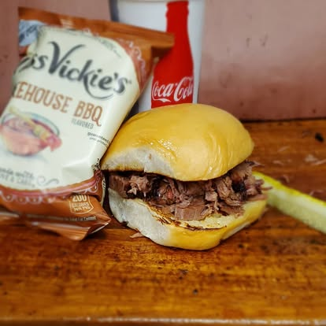
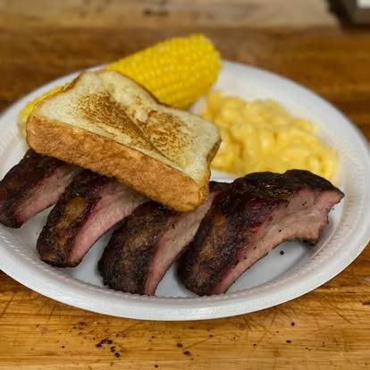
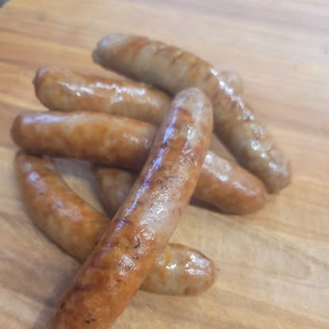
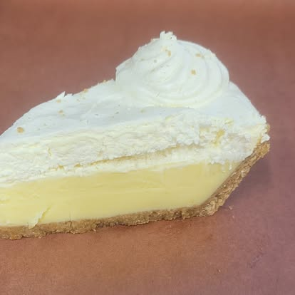
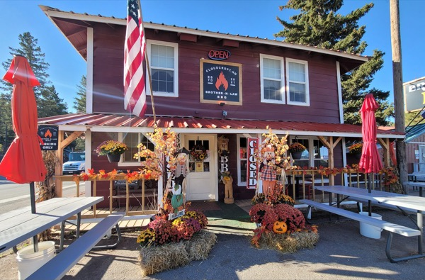

Smoked meats
House specialtyPremium cuts smoked low and slow.
- Sliced brisket (moist or lean)
- Chopped brisket
- Baby back ribs
- Beef ribs
- Smoked turkey
- BBQ chicken
If you eat here once, get the sliced moist brisket — that's the kitchen's headline.
Central Texas barbecue on James Canyon Highway — moist or lean brisket, house-smoked sausages, counter service, and the honest BBQ-shop caveat that the day ends when the day ends. Six days a week, closed Thursday.
The carved wooden front sign, the counter, and the plates.










The Central Texas BBQ counter on James Canyon Highway — moist-or-lean brisket, house-smoked sausage, and the honest BBQ-shop caveat that the day ends when the day ends.
"Sliced moist brisket with mac & cheese and smoked baked beans. That's the honest read on a Central Texas kitchen — brisket done right plus two sides that reveal the rest of the program."
Sliced moist brisket + two sides
"Add a side of fried okra to whatever you order. Perfectly crunchy, crisp, and flavorful — one of the best items on the menu, full stop."
Fried okra
"Brisket fries to start, then split a dinner plate with mac & cheese and tater salad. Banana pudding to close. A lunch that doesn't commit you to two full plates."
Brisket fries + shared plate + pudding
Open six days a week, 11 AM to 6 PM. Closed Thursday. Like most BBQ kitchens, the day's inventory can sell out before 6 PM — call ahead on busy weekends if you're driving up specifically for brisket.
Middle of the James Canyon Highway dining strip — two blocks past Mad Jack's at the 100-block, before the Dusty Boots / High Rollin' / Big Daddy's cluster further up the highway. Parking in the Family Dollar lot next door.
209 James Canyon Hwy
Cloudcroft, NM 88317
Parking: the Family Dollar lot next door, per in-shop guidance.
What this kitchen does well, and when to aim somewhere else on the James Canyon strip instead.
Posted hours are 11 AM – 6 PM, Monday / Tuesday / Wednesday / Friday / Saturday / Sunday, closed Thursday. Like most working BBQ kitchens, the shop can close early if inventory runs out. Regional dining-guide coverage flagged Brother-N-Law's online detail as thin — meaning the posted schedule isn't always the same-day reality.
If you're coming specifically for BBQ and driving up JCH, call (215) 858-0400 before leaving. Mid-week lunch is usually the lowest-risk window; summer weekends are when sell-out risk is highest.
Parking is handled next door in the Family Dollar lot — there's no dedicated BBQ-shop lot. It's a highway-side counter, so watch for mountain-road speeds coming in and out.
The shop's phone number carries a 215 (Philadelphia) area code. It's consistent across Chamber and in-shop signage, so it's not a typo — likely an owner mobile brought from out of state when the business opened.
In-shop signage advertises a gluten-free-friendly orientation, and the owner is reported to be knowledgeable about ingredients — ask about specific menu items rather than assuming. Obvious carb-forward items (sandwich buns) aren't GF; most of the plate format and sides are workable.
Brother-N-Law offers a military discount. Ask for it at the counter when you order.
Dine-in and takeout are both confirmed. The shop reads as family-friendly — counter-service speed, sides for sharing, and a mission statement that foregrounds community. Server Steven is a long-running presence on the floor per in-shop references; expect first-name-basis if you become a regular.
"Delicious BBQ and the fixin's. Get it like this editor by ordering chopped brisket, moist, and a side of fried okra. The mac and cheese is pure comfort."
Three peer restaurants on the same highway strip — or jump back to the full dining guide for all 19.